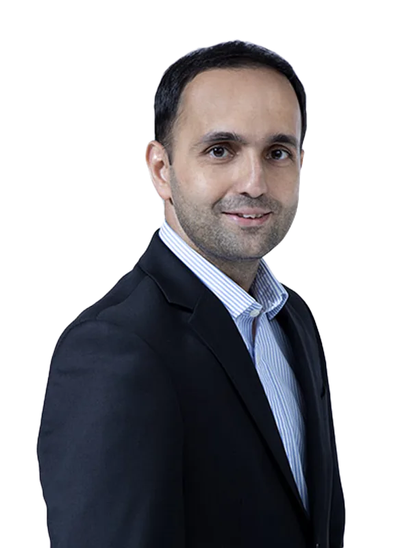
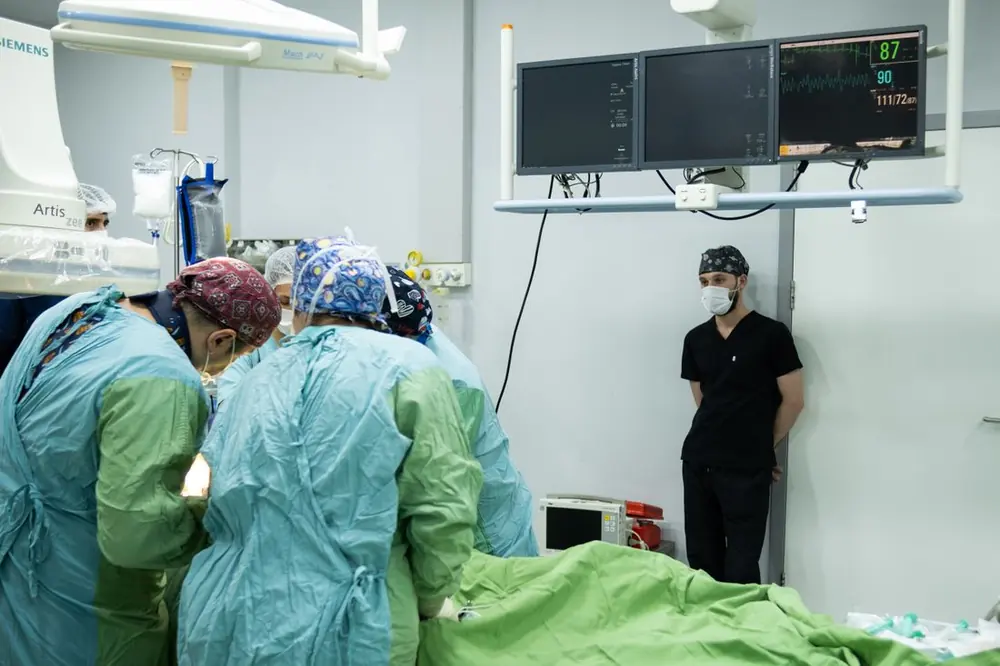
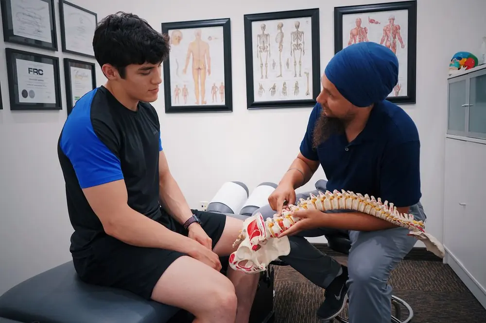
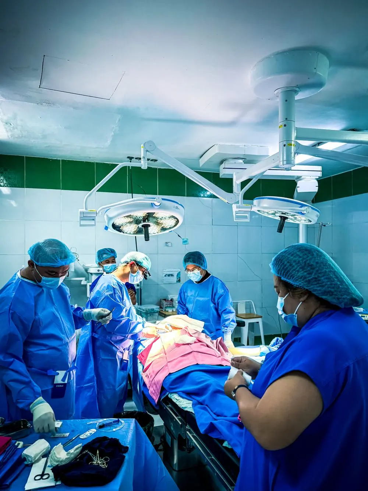

01.
Diagnose
Our consultant cardiologists combine precise diagnosis with a personalised treatment plan, using tests such as ECG, stress testing and cardiac angiograms.


Advanced cardiology care for adults and children, from precise diagnosis to treatment and long-term recovery.

Years of trusted care

Specialists at SJMC
Consultant cardiologists

Licensed hospital beds

 +7
+7Ten consultant cardiologists
The care I received during my heart surgery was exceptional. The staff made me feel comfortable and supported every step of the way.
Sample quote. My cardiologist explained every test and every option before my angioplasty, and I was walking the ward the next day.
Sample quote. The team found the cause of my irregular heartbeat and treated it with ablation. I finally sleep through the night again.
Sample quote. From the Careline call to my follow-up review, everything was arranged for me and my family.

Our consultant cardiologists combine precise diagnosis with a personalised treatment plan, using tests such as ECG, stress testing and cardiac angiograms.
Minimally invasive procedures in two Cath Labs with Philips Azurion 7 C20I FlexArm technology, plus complex heart surgery when it is needed.

Cardiologists, physiotherapists, pharmacists and dietitians work together to support holistic recovery and long-term heart health.

Contrast dye and X-ray imaging show how blood flows through the coronary arteries, so narrowed or blocked vessels can be found.

A thin balloon catheter, usually with a stent, reopens a narrowed coronary artery and restores blood flow to the heart.
Targeted radiofrequency energy treats the small areas of heart tissue that cause an irregular heartbeat.

A small device placed under the skin keeps the heart beating at a steady, healthy rate.

Measures pressures and oxygen levels inside the heart chambers to guide the right treatment plan.

Percutaneous transluminal angioplasty opens narrowed leg arteries to improve circulation.

Removes a blood clot from the lung arteries to relieve strain on the heart.

Records the heart's electrical activity at rest and during exercise to check rhythm and blood supply.
For complex conditions, our surgical team performs heart operations with full multidisciplinary support.
Contrast dye and X-ray imaging show how blood flows through the coronary arteries, so narrowed or blocked vessels can be found.
A thin balloon catheter, usually with a stent, reopens a narrowed coronary artery and restores blood flow to the heart.
Targeted radiofrequency energy treats the small areas of heart tissue that cause an irregular heartbeat.
A small device placed under the skin keeps the heart beating at a steady, healthy rate.
Measures pressures and oxygen levels inside the heart chambers to guide the right treatment plan.
Percutaneous transluminal angioplasty opens narrowed leg arteries to improve circulation.
Removes a blood clot from the lung arteries to relieve strain on the heart.
Records the heart's electrical activity at rest and during exercise to check rhythm and blood supply.
For complex conditions, our surgical team performs heart operations with full multidisciplinary support.


Want to meet our cardiologists?
Meet the team
Irregular heartbeats, treated with medication, ablation or a pacemaker.
Narrowed heart arteries, found by angiogram and opened with angioplasty.
Ongoing care that supports a weakened heart and improves daily life.
Heart conditions present from birth, cared for in children and adults.
Narrowed leg arteries, opened with lower limb angioplasty.
Meet a consultant cardiologist for a full assessment. Tests such as ECG, stress testing and angiograms lead to a precise diagnosis and a plan made for you.
Many procedures are minimally invasive and take place in our two Cath Labs, equipped with Philips Azurion 7 C20I FlexArm technology for safer procedures.
Physiotherapists, pharmacists and dietitians join your cardiologist to support a holistic recovery and long-term care for your heart.
Meet a consultant cardiologist for a full assessment. Tests such as ECG, stress testing and angiograms lead to a precise diagnosis and a plan made for you.
Many procedures are minimally invasive and take place in our two Cath Labs, equipped with Philips Azurion 7 C20I FlexArm technology for safer procedures.
Physiotherapists, pharmacists and dietitians join your cardiologist to support a holistic recovery and long-term care for your heart.
Consultant Cardiologist
Consultant Cardiologist
Consultant Cardiologist
Consultant Cardiologist
English, Bahasa Melayu, Tamil, Mandarin, Cantonese and Bahasa Indonesia.
Find a doctorConsultant Cardiologist

Yes. SJMC provides cardiology care for adults and children, including congenital heart defects, from early screening and diagnosis to advanced treatment.
Cardiac angiogram, cardiac angioplasty, EP radiofrequency ablation, permanent and temporary pacemaker insertion, left and right heart catheter, lower limb PTA and PE thrombectomy.
Yes. Our 24-Hour Careline is +603 5639 1212, and you can WhatsApp us on +6019 317 1818 at any time.
Yes. TeleConnect handles 24-hour medical enquiries and lets you consult our doctors through secure video calls. Call +603 5639 1818.
Send the form on this page, call the Careline or WhatsApp us, and our team will arrange a consultation with the cardiology team.